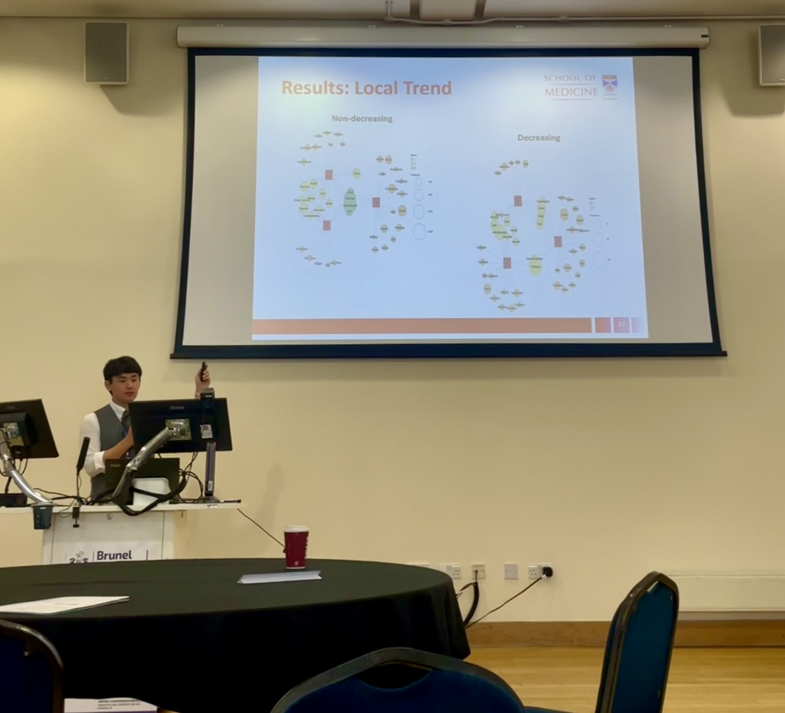

Kay/Koichi Akashi
Third-Year Medical Student at the University of Manchester
Education
◉ School of Medicine, University of St Andrews
(Sep 2022 - Jul 2025)
◉ School of Medical Sciences, The University of Manchester
(Sep 2025 - Present)

Awards
- ◉ Competitive Paper Award, Exploring the Modality of Network-Type Thinking in Young Children with Picture Books, 17th IIAI International Conference on Smart Learning Technologies and Learning Environments (Dec 2024).
- ◉ Best Paper Award, A Novel Balanced Reporting Innovation with Data Governance Evolution (BRIDGE) Method: An Eduinformatics Integration of Creativity, Abduction and Organizational Knowledge Acceptance, The 19th International Conference on Knowledge, Information and Creativity Support Systems (Dec 2024).
Publications
- R. Kozaki, K. Akashi, K. Bannaka, H. Ito, K. Murakami, S. Matsumoto, Y. Kozaki, S. Kajiyama, M. Miyahara, E. Furusawa, K. Takamatsu: Demystification of Network-Type Knowledge Formation Mechanism of Pre-School Children through Picture Books. International Journal of Learning Technologies and Learning Environments 9(1) (Apr 2026).
- K. Takamatsu, S. Matsumoto, K. Murakami, K. Tsuruta, N. Honda, Y. Ishige, S. Matsumoto, H. Kawasaki, I. Noda, K. Bannaka, T. Gozu, T. Sakai, R. Kozaki, A. Kishida, H. Ito, K. Akashi, S. Hama, G. Prescott, M. Uchida, A. Nakamura, Y. Kozaki, T. Mori, S. Tajiri, N. Shiratori, S. Imai, K. Mitsunari, Y. Nakata, S. Hirokawa, M. Mori: Extended Lifelong Sustainable Inquiry-based Community Learning (LSiCL) for Human-LLM Learning Based on Eduinformatics. Lecture Notes in Networks and Systems, Springer, Singapore. vol.1758 390-399 (Jan 2026).
- K. Akashi, H. Ito, A. Yamashita, K. Murakami, S. Matsumoto, K. Takamatsu, T. Gozu: Amalgamating DP-LCS-Assisted Abridgement Assessment with BERT-Based Sentiment Analysis for Early Warning and Prediction of Academic Performance. Lecture Notes in Networks and Systems, Springer, Singapore. vol.1441 151-161 (Oct 2025).
Presentations
- ◉ K. Takamatsu, S. Matsumoto, K. Murakami, K. Tsuruta, N. Honda, Y. Ishige, S. Matsumoto, H. Kawasaki, I. Noda, K. Bannaka, T. Gozu, T. Sakai, R. Kozaki, A. Kishida, H. Ito, K. Akashi, S. Hama, G. Prescott, M. Uchida, A. Nakamura, Y. Kozaki, T. Mori, S. Tajiri, N. Shiratori, S. Imai, K. Mitsunari, Y. Nakata, S. Hirokawa, M. Mori: Extended Lifelong Sustainable Inquiry-based Community Learning (LSiCL) for Human-LLM Learning Based on Eduinformatics. 4th World Conference on Information Systems for Business Management (ISBM 2025) (Sep 2025).
- ◉ K. Akashi, H. Ito, A. Yamashita, K. Murakami, S. Matsumoto, K. Takamatsu, T. Gozu: Redesigning of Marking and Feedback Architecture in Abridgement Assessment. Technical Meeting on Information Systems IS25013 (Feb 2025).
- ◉ K. Akashi, H. Ito, A. Yamashita, K. Murakami, S. Matsumoto, K. Takamatsu, T. Gozu: Amalgamating DP-LCS-Assisted Abridgement Assessment with BERT-Based Sentiment Analysis. 10th International Congress on Information and Communication Technology (ICICT 2025), London (Feb 2025).